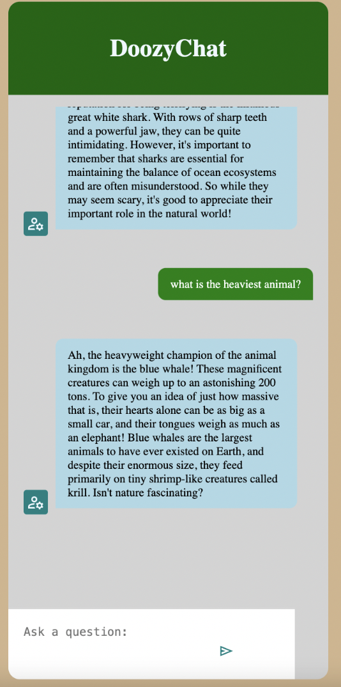
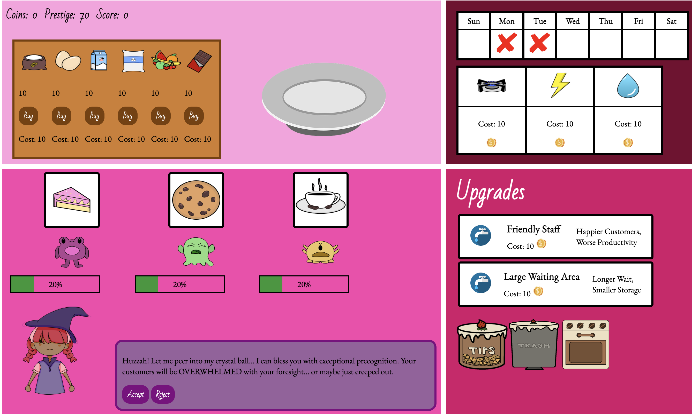

The intent of this class was to shed light on the different ways people utilize this major. We had several guest speakers who lent us their insight into how we should move forward as students if we were pursuing careers similar to their own.
Its assignments touched on a variety of mediums with the intent of sparking one's interest in any or all of the tools used.
Students were encouraged to lean into their strengths and interests when completing a project, and many of the projects were left open-ended to allow for specialization in one aspect of creation or another.
The first large project I completed in this class was the creation of a personal portfolio.
We were allowed to decide the specific subject matter, as well as the audience we wanted to appeal to.
Looking at this first attempt from where I am now regarding HTML, CSS, and Javascript, this iteration looks rough, but it's encouraging to see how much I've learned since then.
|
A project I completed later on in this course was the development of a chatbot. The goal of this assignment was not to pursue machine learning, but instead to create an appealing webpage which could host the conversation a user had with the bot. My ability to generate "tokens" through OpenAI has expired, but you can still access the code. Chatbot Repository |
 |
I am proud of how this project turned out. As a fan of the Bladerunner series, I was very enthusiastic about creating a scene based on this aesthetic.
Because of how much I enjoyed creating this scene, this project opened my eyes to possibly involving myself in 3D modeling in game development, something I'd not considered pursuing before.
The final project I completed in this class was the creation of a game. It proved to be the most taxing, and the most interesting, given that my threads are in Games and Media.
My group and I created Sinistea, a casual game in which you serve monsters pastries at a cafe.
This assignment cemented my understanding of HTML, CSS, and Javascript and put into perspective all I had learned while taking this course.
If you're interested in playing the final version, you can access the game here.
Overall, I felt this class accomplished its goal of teaching me the various career pathes I can pursue with this major.
Each assignment left me more informed about what I want to do with a B.S. in Compuational Media after graduation.
Moving forward, I hope to use what I learned to improve upon future works, so that I may add to the list of projects seen above.